An enterprise deploys an AI agent across sales, support, billing, and account operations. It produces 12,000 proposals a day: address cleanup, contract-language changes, refunds, pricing exceptions, data exports, customer messages, and account termination. Governance requires a human “in the loop,” so every proposal enters one approval inbox. By 11:00, 1,900 items are waiting. Reviewers learn that most are harmless, open less evidence, and approve faster. A routine cleanup submitted at 08:42 sits ahead of a time-sensitive containment action. The dashboard celebrates a 97% approval rate. No one can say whether review prevented loss, whether qualified people saw the right actions, or how much unresolved risk is aging in the queue.
This story was written with AI writing and visualization assistance. All organizations, action volumes, probabilities, losses, thresholds, reviewer behavior, staffing, service levels, simulations, and costs are synthetic; the architecture and quantitative models are reference designs, not observations about a deployed workforce. The fatigue figures are illustrative scenarios, not findings from human-subject research.
“Human in the loop” is often treated as a boolean product feature. Either the agent needs approval or it does not. That framing hides the actual system: proposals arrive over time; reviewers have different skills and limits; service times vary; deadlines expire; evidence quality changes decision value; queues compete for capacity; fatigue and habituation affect performance; and every delay has a business cost.
Human approval is therefore a capacity-constrained decision service. It needs admission control, service classes, risk-aware priority, eligibility routing, separation of duties, queue models, evidence packets, calibration, error budgets, and recovery. A click is only the final event in a much larger operating system.
Approval does not add safety when the right reviewer cannot make the right decision before the decision expires.

Technical summary#
The reference design classifies every proposed action by expected impact, likelihood, reversibility, novelty, evidence quality, propagation, and independent controls. Policy maps the result into one of four service classes: no synchronous review, asynchronous review, priority review, or incident command. A queue router selects only eligible reviewers and optimizes deadline risk, not raw FIFO wait. The reviewer receives a signed packet containing the exact delta, sources, contradictions, uncertainty, policy reason, alternatives, expiry, and recovery plan. The choice binds that packet digest and cannot authorize later mutation.
Queueing and decision theory answer different parts of the problem:
• Expected-loss analysis asks whether qualified review is likely to reduce loss enough to justify labor, delay, residual reviewer error, and tail constraints.
• Queueing analysis asks whether arrival volume, service-time distribution, reviewer pools, and priority rules can deliver that review before the action expires.
• Value-of-information analysis asks whether one more evidence step is worth its time and cost.
• Calibration asks whether automated routes, reviewer decisions, and adjudicated outcomes support narrower or broader autonomy.
The design is deliberately action-level. A “high-confidence model” can propose an irreversible account closure. A “low-confidence model” can propose a harmless tag cleanup. Confidence is one input; it is not the review policy.
Scope, scenario, and evidence boundary#
The synthetic operating scenario contains 12,000 proposals per day. Eighty percent are low-impact, reversible data maintenance. Fifteen percent are customer-visible or financially bounded. Four percent are high-value pricing, refund, contract, or export actions. One percent are containment, termination, or other urgent and difficult-to-reverse actions. Arrivals are bursty around business events, batch jobs, and regional working hours.
Reviewers belong to distinct pools: frontline operations, senior pricing, finance level 2, risk, privacy, legal, and incident command. Eligibility includes product, jurisdiction, business-unit scope, value limit, training, recency of certification, conflict of interest, and whether the reviewer participated in proposal creation.
The article uses these definitions:
Proposal is an immutable typed action candidate with exact resource, delta, evidence, precondition, expiry, and recovery specification. Review task is one routed decision request for that proposal. Approval packet is the reviewer-visible, digest-bound representation. Decision is approve, deny, edit-and-repropose, abstain, or expire. Adjudicated outcome is a later qualified determination used for calibration; it is not assumed to equal the first reviewer click.
Arrival rate λ measures eligible review tasks entering a queue per unit time. Service rate μ is the rate at which one qualified reviewer completes tasks under a declared service-time model. Offered load a = λ/μ is measured in Erlangs. Utilization ρ = λ/(cμ) compares offered load with c parallel reviewers. When ρ ≥ 1 in a stationary model, the queue has no stable steady state.
All queues, probabilities, handling times, and cost models here are synthetic. The Erlang-C equations are mathematical derivations under M/M/c assumptions; they are not claims that real approval arrivals or reviewer service times are exponential. Production decisions require empirical distribution fitting, simulation, sensitivity, and workforce review.
Build an approval decision service#
The approval layer should be a shared service with typed APIs and durable state, not a callback embedded in each agent framework. The agent proposes; the service decides how human judgment is acquired and bound.
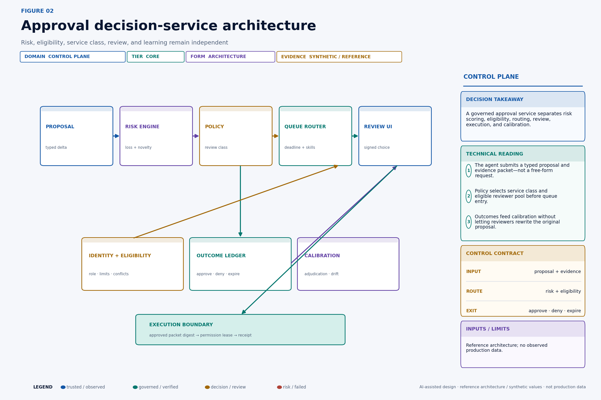
The proposal gateway validates a governed action schema. It rejects vague intent such as “handle this account” and requires a field-level delta, expected resource version, evidence manifest, expiration, and postcondition.
The risk engine computes transparent features and categorical flags. It does not make the final authorization decision. The policy decision point maps action type, features, organizational risk tolerance, and legal or duty requirements to a review class and obligations.
The identity and eligibility service determines which human principals can review this exact action now. Eligibility can change after task creation, so the router and decision endpoint re-evaluate it. The queue router assigns priority and candidate pool. It can defer low-risk work, invoke surge capacity, or reject admission when safe service is impossible.
The review interface renders an approval packet from structured fields and governed evidence. Approve signs or otherwise integrity-binds the packet digest, decision, reviewer identity, policy, timestamp, and expiry. “Edit” creates a new proposal; it does not mutate the approved one.
The outcome ledger records arrival, classification, assignment attempts, open, evidence navigation, decision, expiry, execution, verification, appeal, and adjudication. It supports operations and evaluation while minimizing sensitive behavioral surveillance.
The calibration service analyzes disagreement, outcome quality, review value, and subgroup effects. It proposes threshold or policy changes through governance; it does not change production rules automatically.
This architecture aligns with the NIST AI RMF Core, which describes governance, documented roles, risk tolerance, human oversight, measurement, independent review, and ongoing monitoring as lifecycle activities. The framework does not prescribe this queue design or its thresholds. It supports the principle that human oversight must be defined, assessed, resourced, and documented in context.
Decompose action-level risk#
Review policy should evaluate the action, not merely the model output. A useful feature vector is:
x(a) = [impact, error_likelihood, irreversibility, novelty,
evidence_weakness, propagation, control_gap]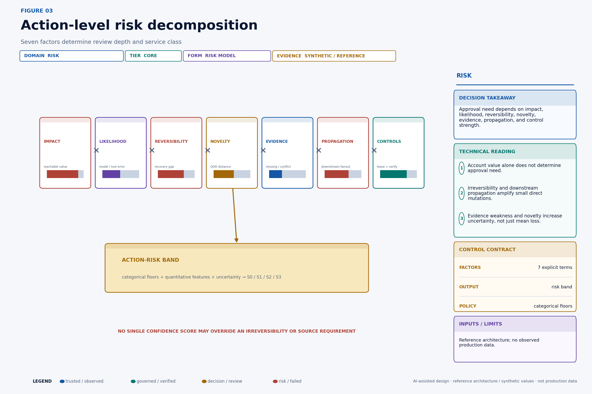
Impact includes reachable money, customer commitments, rights, safety, privacy, operational continuity, and reputational consequence. Use distributions or bands when value is uncertain; do not collapse every effect into dollars.
Error likelihood conditions on action type, model route, tool chain, evidence pattern, and deployment context. Offline model accuracy is not the same probability that this particular action is harmful.
Irreversibility measures more than API rollback. A sent message can be corrected but not unseen. A refunded payment can be recharged but still create customer harm. A data export can be deleted internally but may already have left the boundary.
Novelty captures out-of-distribution features: unseen product, jurisdiction, account structure, attachment type, policy combination, tool sequence, or value range. Novelty increases uncertainty even when predicted error remains low.
Evidence weakness covers missing required sources, staleness, provenance gaps, contradictions, transformation loss, and model uncertainty. Propagation measures how many downstream systems and people can act on the effect. Control gap describes missing independent verification, compensation, leased authority, receipt, or containment.
A transparent risk index may support routing:
R = σ(β0 + βI I + βL L + βV V + βN N + βE E + βP P − βC C)σ bounds the score. But categorical rules remain necessary: customer data export requires privacy eligibility; an irreversible termination requires senior review; a pricing change above an approved limit requires separation of duties. A low aggregate score cannot override those floors.
Store every feature value, source, transformation, model or rules version, uncertainty, and policy result with the task. If the risk engine changes, replay historical tasks under the old and proposed version before modifying routes.
Review only when it changes the constrained decision#
Human review has positive value when it reduces expected decision loss enough to exceed review cost, delay cost, reviewer residual error, and any opportunity cost. It also has mandatory value when law, policy, contractual duty, or organizational risk tolerance requires it regardless of average economics.
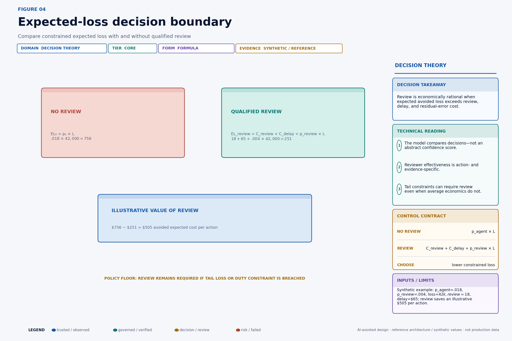
For an action class:
EL(no review) = p_agent_error × L_error
EL(review) = C_review + C_delay
+ p_reviewer_error × L_error
+ p_review_harm × L_review_harm
Value(review) = EL(no review) − EL(review)Figure 4 uses p_agent_error = .018, p_reviewer_error = .004, conditional loss $42,000, review labor $18, and delay cost $65. It produces illustrative expected costs of $756 without review and $251 with review, or $505 in value. These are not measured probabilities.
Several corrections matter in production:
• Errors have a distribution, often with a heavy tail. Expected value may hide a rare unacceptable outcome, so add chance constraints or conditional value-at-risk.
• Reviewer performance depends on action type, evidence, interface, workload, and competence. Do not import one “human accuracy” constant.
• Delay changes the action. A pricing opportunity can expire; a containment decision can allow harm to continue; a fraud signal can become stale.
• Review itself can cause harm through inconsistent treatment, unauthorized access, disclosure, or slow service.
• Review can improve future automation through adjudicated labels, but that future value should not justify unnecessary current exposure.
A constrained decision could be:
minimize labor_cost + delay_cost + residual_expected_loss
subject to P(loss > L_max) ≤ ε
mandatory_role(action) is present
separation_of_duties(action) is satisfied
decision_before(expiry)The organization should document which terms are empirical, estimated, judgmental, or policy-imposed.
Create explicit service classes#
One queue cannot simultaneously optimize a 30-second incident decision and an eight-hour content review. Define service classes with separate admission, priority, reviewer pools, deadlines, and fallbacks.
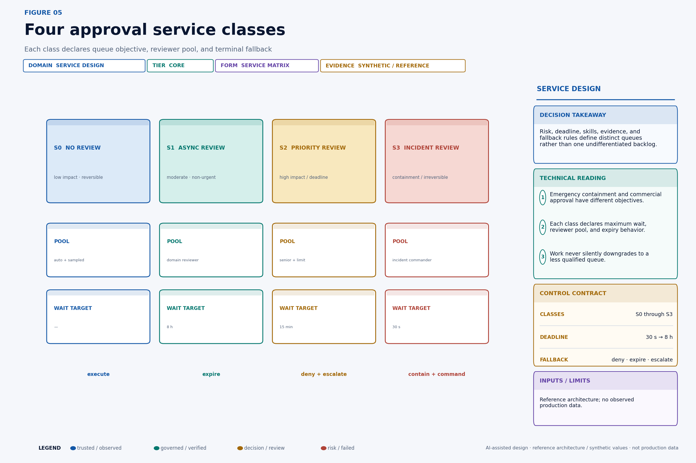
S0 — no synchronous review. Low-impact, reversible, well-evidenced actions execute under bounded authority and verification. A statistically designed sample may receive retrospective review. “No synchronous review” does not mean no controls.
S1 — asynchronous review. Moderate, non-urgent proposals enter a domain queue with an hours-scale deadline. Expiry denies or regenerates the proposal; it does not leave stale approval open.
S2 — priority review. High-impact or time-sensitive actions route to senior reviewers with explicit value limits and a minutes-scale SLO. Capacity is reserved, and low-risk queues cannot consume it fully.
S3 — incident command. Containment, irreversible, or fast-propagating actions route to a small eligible command pool with seconds-scale acknowledgement. The decision may be “contain now, investigate next,” supported by break-glass governance and after-action review.
Policy output should be structured:
{
"service_class": "S2",
"priority": 87,
"deadline_at": "2026-08-23T10:57:00Z",
"required_skills": ["pricing-enterprise", "region-apac"],
"minimum_seniority": "principal",
"value_limit": 2500000,
"separation_rules": ["not-proposer", "not-evidence-curator"],
"minimum_evidence": ["pricing-policy-z0", "contract-current"],
"on_expiry": "deny_and_repropose",
"policy_version": "approval-routing/19"
}Service class is part of the approval receipt. Manual reassignment cannot weaken requirements without a new governed decision.
Queueing theory reveals the saturation cliff#
The simplest diagnostic is an M/M/c queue: Poisson arrivals, exponential service time, c identical parallel servers, one class, infinite waiting room, and steady state. Real approval systems violate most assumptions, but the model exposes a crucial fact: delay rises nonlinearly near capacity.
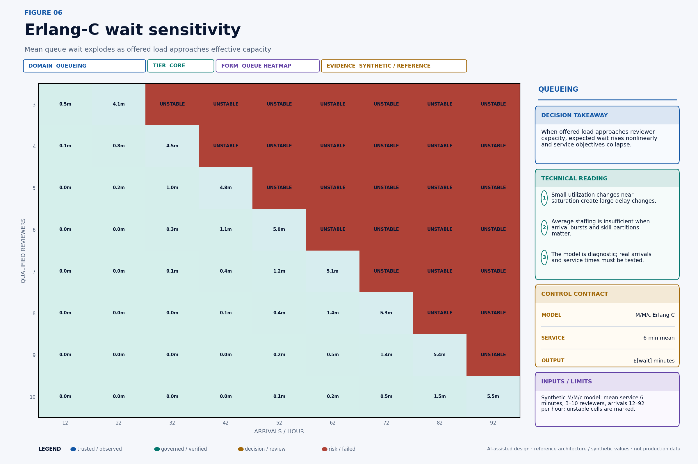
Let a = λ/μ, ρ = λ/(cμ), and ρ < 1. The Erlang-C probability that an arrival waits is:
a^c
----------
c!(1−ρ)
P(wait) = -------------------------
Σ(k=0 to c−1) a^k/k!
+ a^c/[c!(1−ρ)]Expected queue wait is:
E[Wq] = P(wait) / (cμ − λ)
E[W] = E[Wq] + 1/μFigure 6 assumes mean service time six minutes, so one reviewer has μ = 10 tasks/hour. Five reviewers offer nominal capacity 50/hour. At 42 arrivals/hour, utilization is 84% and expected queue wait is about 4.8 minutes under these assumptions. At 52/hour the queue is unstable. Adding one reviewer changes both capacity and delay nonlinearly.
Do not use this heatmap as a staffing plan. Real arrivals are bursty and correlated. Service time is typically heavy-tailed: most reviews are short, while complex cases consume an hour. Reviewers are not identical. Skill and value limits partition capacity. Priorities cause low-class starvation. Breaks, training, meetings, time zones, and attention reduce effective availability. Proposals abandon or expire.
Use empirical discrete-event simulation after the diagnostic. Replay timestamped arrivals, fit service-time distributions by class and reviewer pool, model schedules and eligibility, and test spike, outage, and policy-change scenarios. Preserve uncertainty bands instead of publishing one staffing number.
Priority scheduling is a risk policy#
Once multiple classes share capacity, dispatch order becomes part of the risk model. FIFO optimizes arrival fairness but ignores consequence and expiry. Strict priority protects S3 and S2 work but can starve S1 indefinitely. Shortest-processing-time scheduling improves throughput but systematically delays complex decisions. Earliest-deadline-first protects temporal feasibility but can favor low-impact tasks with arbitrary deadlines. No discipline is neutral.
A practical scheduler uses hard class reservations plus a bounded priority score:
priority(task, now) =
wR × normalized_residual_risk(task)
+ wD × deadline_pressure(task, now)
+ wA × bounded_age(task, now)
+ wP × propagation_velocity(task)
− wS × predicted_service_time(task)deadline_pressure should rise sharply as slack disappears. bounded_age prevents low classes from waiting forever but has a cap so one old cleanup cannot outrank a new containment action. The negative service-time term is small and bounded; otherwise the router optimizes easy throughput while hard decisions age. Categorical S3 requirements and dedicated capacity sit outside the score.
Slack is not simply deadline − now. The scheduler needs predicted end-to-end completion:
slack = expires_at
− now
− predicted_queue_wait
− predicted_handle_time
− execution_handoff_budget
− revalidation_budgetWhen slack is negative, the service should not ask a reviewer to race a stale proposal. It follows the declared fallback: contain, deny, regenerate with current evidence, or escalate to incident command.
Preemption also needs semantics. Interrupting a reviewer midway through a complex contract decision can destroy context and increase error. S3 work may preempt unstarted S1 assignments while allowing an already opened S2 review a short completion window. The outcome ledger records assignment, open, pause, resume, and requeue events so service-time models distinguish active handling from calendar occupancy.
Capacity reservations prevent one class from consuming all servers. For reviewer pool p, policy can reserve r_p,S3 slots for S3, r_p,S2 for S2, and expose remaining capacity to S1. Unused reservation may be borrowed with a recall rule. Borrowing must not create non-preemptible work that blocks an arriving critical task. Cross-trained surge reviewers add temporary edges to the eligibility graph only after current certification is verified.
Simulate the operating policy before staffing it#
A discrete-event model should represent individual events rather than average flows:
1. proposal arrival with time, class, risk, evidence, expiry, and skill requirements;
2. eligibility snapshot and candidate reviewer set;
3. reviewer schedule, current work, proficiency, and value limit;
4. assignment, accept, open, evidence request, pause, decision, and handoff;
5. source or policy changes that invalidate an open proposal;
6. outage, reviewer absence, queue surge, and break-glass activation;
7. adjudicated decision quality and downstream effect.
Replay actual arrivals when available, but separate training and evaluation periods. Preserve correlations: a product incident can simultaneously increase S3 containment work and remove reviewers who are responding elsewhere. Draw service times from class- and pool-specific distributions, including a long tail. Model reviewer disagreement and evidence requests rather than treating every service completion as a correct decision.
Simulation outputs should include wait and deadline percentiles by class, risk backlog, utilization, preemption, context switches, abandonment, expiry, no-eligible capacity, false autonomy, harmful approval, and overtime. Run sensitivity across demand, service-time tail, absence, and routing weights. A staffing recommendation is robust only if the service objective survives plausible combinations—not merely the mean forecast.
Validate the simulator against a held-out period. If it reproduces throughput but not deadline breaches or skill bottlenecks, it is not decision-ready. Publish the input window, exclusions, distribution choices, random seed, parameter uncertainty, and failure cases with the recommendation.
Measure the full approval clock#
“Review time” is often measured from UI open to button click, excluding the largest delays. The service clock begins when a valid task arrives and ends when the bound decision reaches execution or terminal expiry.
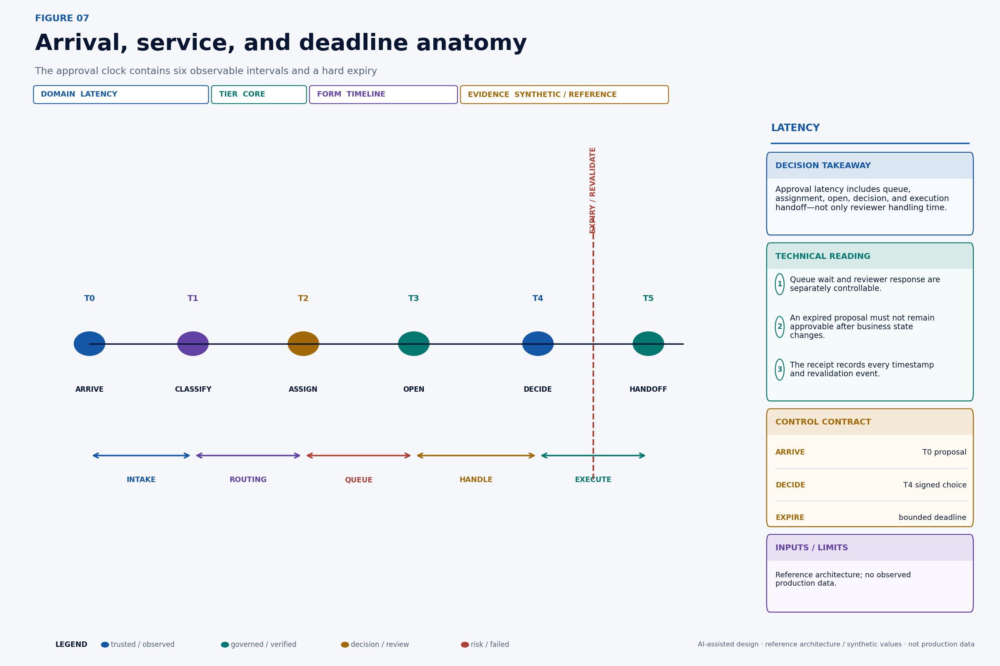
Capture:
• arrived_at: validated proposal entered the service;
• classified_at: risk and service policy completed;
• assigned_at: eligible reviewer accepted ownership;
• opened_at: packet became visible;
• decision_started_at: reviewer interacted with decision-relevant evidence;
• decided_at: approve, deny, abstain, edit, or expire was signed;
• handed_off_at: downstream authority or rejection receipt was emitted;
• executed_at and verified_at: approved action reached terminal outcome.
Do not infer attention from page open time. Review analytics should minimize worker surveillance and focus on system design. Evidence navigation, missing-field events, and decision changes can reveal packet problems without pretending to measure cognition.
Expiry is a control. If the underlying resource, evidence, policy, reviewer eligibility, or risk band changes, the proposal must be revalidated. The approve endpoint checks packet digest, proposal version, business precondition, reviewer eligibility, and deadline atomically before creating authority.
Backlog is aging risk, not just work count#
When effective service capacity is below arrivals, backlog grows approximately at λ − cμ in a fluid model. A small average mismatch can become a large risk inventory during a burst.
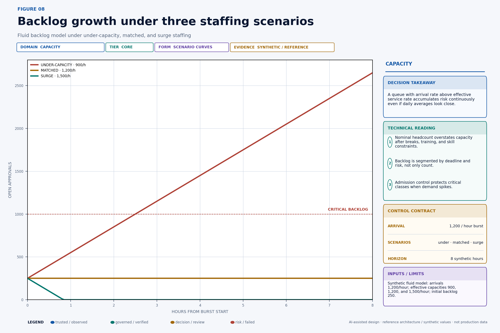
Figure 8 assumes 1,200 arrivals/hour for eight hours. Effective capacities are 900, 1,200, and 1,500/hour. The under-capacity case grows from 250 to 2,650 open tasks. Matched capacity never removes the initial backlog. Surge capacity drains it in under one hour if the queue is fungible—which real skilled queues are not.
An operational backlog view needs more dimensions:
risk_backlog = Σ open_task_i [exposure_i × urgency(age_i, deadline_i)]
deadline_debt = Σ max(0, predicted_completion_i − deadline_i)
skill_debt(pool) = arrivals_requiring_pool − effective_capacity(pool)Counts should be segmented by service class, risk band, action type, reviewer pool, jurisdiction, age, deadline slack, and evidence completeness. The ten oldest low-risk tasks should not obscure a new high-impact task with three minutes of slack.
Use Little's Law as an instrumentation check over a stable measurement window:
L = λWL is average number of tasks in the system, λ is throughput, and W is average end-to-end time. The relationship is broad, but the measurement boundary must match: do not compare open-queue count with arrival-to-execution time while excluding in-review work. If observed values diverge materially after accounting for window and transients, task states may be missing, duplicated, abandoned, or measured under inconsistent clocks. Apply the check separately by class and pool. It validates accounting, not service quality; a perfectly measured six-hour wait can still violate the decision deadline.
Admission control is legitimate. During overload, the service can pause low-value proposal generation, batch similar S1 work, reduce autonomous candidate volume, require stronger evidence before admission, or deny non-urgent proposals with a retry-after signal. It must not silently route S2 work to an unqualified general queue.
Eligibility routing fragments capacity#
A reviewer who is available is not necessarily eligible. The routing graph is bipartite: action requirements on one side and reviewer pools or individuals on the other. An edge exists only when every current constraint passes.
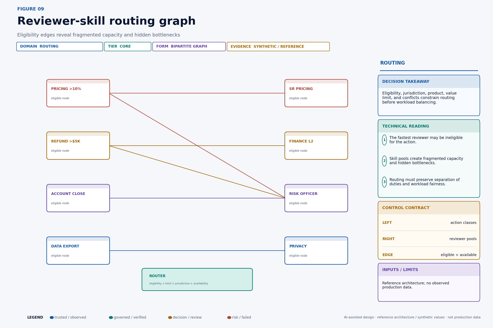
Eligibility predicate:
eligible(task, reviewer, time) =
active(reviewer, time)
∧ trained(reviewer, task.action_type)
∧ jurisdiction_allowed(reviewer, task.subject)
∧ reviewer.value_limit ≥ task.exposure
∧ reviewer.product_scope contains task.product
∧ no_conflict(reviewer, task)
∧ separation_of_duties(reviewer, task)After hard eligibility, routing can minimize a cost function:
route_cost = α·predicted_deadline_breach
+ β·expected_wait
+ γ·skill_mismatch
+ δ·workload_imbalance
+ ε·context_switch_costSkill mismatch should not relax a hard eligibility rule. If no reviewer qualifies, the task escalates, expires, or is denied according to policy. The system must expose “no eligible capacity” rather than recording an ordinary delay.
Routing fairness matters. Always selecting the fastest reviewer can overload experienced staff and prevent others from developing competence. Use controlled load balancing, mentoring queues, certification tasks, and quality monitoring without turning high-risk decisions into training exercises invisibly.
Enforce separation of duties#
Human approval is not independent merely because a human clicked. The same person might have requested the action, curated the evidence, configured the policy, issued authority, or verified the result.
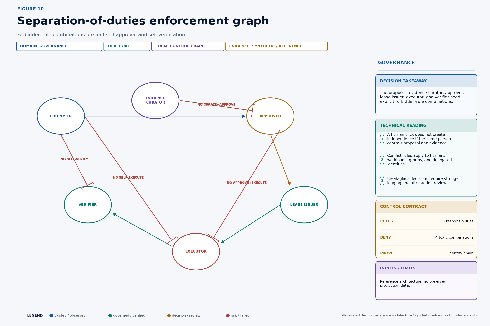
NIST SP 800-53 Rev. 5 includes controls for separation of duties and least privilege, including AC-5 and AC-6. An agent approval service must translate those organizational controls into runtime identity relationships.
Model roles explicitly:
• proposal requester and on-behalf-of subject;
• agent workload and orchestration service;
• evidence curator or source owner;
• policy administrator;
• reviewer and approving authority;
• permission issuer;
• executor;
• effect verifier;
• appeal adjudicator.
Evaluate conflicts across direct identity, group membership, delegation, service ownership, reporting relationships, and recent participation. A reviewer using a second account is still the same person. A service operated exclusively by the proposal team may not provide sufficient independence for high-risk verification.
Break-glass paths are necessary for incidents. They should require a declared emergency reason, stronger authentication, time-bounded authority, immutable receipt, immediate notification, and after-action review by an independent party. Break-glass is not a permanent high-priority queue bypass.
The approval packet is a decision instrument#
Reviewers frequently see a model summary and approve it without inspecting primary evidence. The interface should instead make the exact business decision and its uncertainty legible.
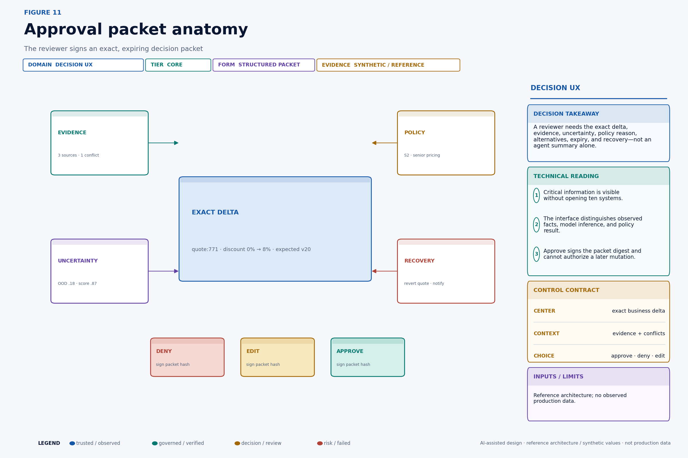
The packet includes:
• exact resource, field delta, current value, expected version, and downstream effects;
• account or case exposure and action risk factors;
• required sources, citations, freshness, provenance, and contradictions;
• model inference and uncertainty clearly separated from observed facts;
• policy result, review class, reviewer eligibility reason, and value limit;
• available alternatives: approve, deny, reduce value, request evidence, abstain;
• expiry and consequences of delay;
• postcondition, verification, compensation, and recovery plan;
• proposal, evidence, and packet digests.
Avoid dark patterns. Approve and deny deserve comparable visibility. Keyboard shortcuts should not make high-risk approval effortless by accident. The UI should surface material changes between versions and never carry a prior approval to an edited proposal.
An approval record can be:
{
"approval_id": "apr_01JQ8Z...",
"proposal_id": "prop_01JQ8Y...",
"proposal_sha256": "sha256:91ab...72e0",
"packet_sha256": "sha256:c20f...ae17",
"decision": "approve",
"limits": {"discount_pct_lte": 8},
"reviewer": "user:pricing-principal-17",
"eligibility_policy": "pricing-reviewer/12",
"routing_policy": "approval-routing/19",
"decided_at": "2026-08-23T10:51:14Z",
"expires_at": "2026-08-23T10:57:00Z"
}Execution verifies every digest, limit, identity, deadline, and target precondition before authority is issued.
Evidence quality determines review depth#
A reviewer cannot improve a decision when the packet lacks decision-relevant evidence. Evidence quality should route depth and trigger rework before consuming scarce senior capacity.
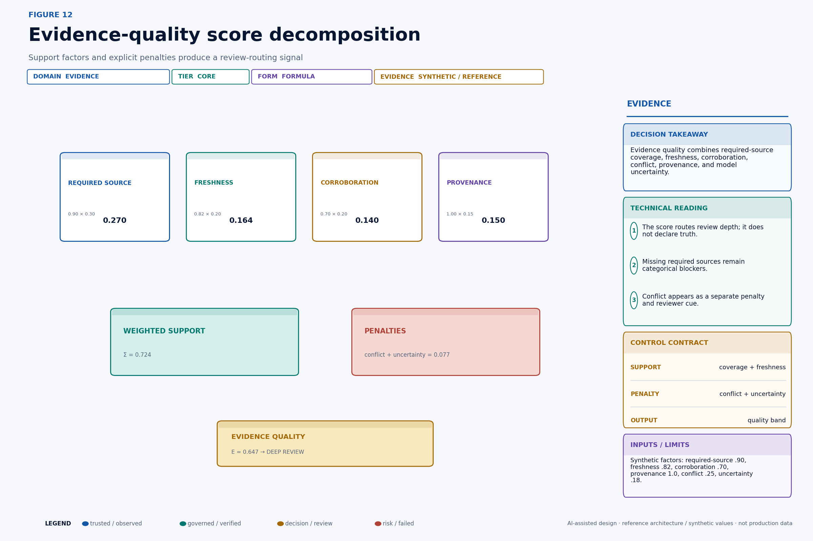
One routing heuristic is:
E = wR·required_source_coverage
+ wF·freshness
+ wK·independent_corroboration
+ wP·provenance_completeness
− λC·conflict
− λU·model_uncertaintyFigure 12 uses synthetic values .90, .82, .70, 1.0, .25, .18. It produces a review-routing signal, not probability of truth. Categorical requirements remain: if the current contract is mandatory and absent, no weighted combination substitutes for it.
Low evidence quality can cause three different routes. Acquire asks an automated connector for missing evidence before queue admission. Deep review sends the task to a reviewer qualified to interpret conflicts. Deny or abstain applies when evidence cannot be obtained before expiry or the action is too risky under uncertainty.
Measure packet yield: the proportion of admitted tasks that contain all required evidence, the additional review time caused by missing fields, and the outcomes of evidence requests. Improving upstream source contracts may create more capacity than hiring reviewers.
Stop gathering evidence when marginal value turns negative#
Review can continue indefinitely. Value-of-information analysis asks whether the expected improvement from another evidence step exceeds labor, delay, and opportunity cost.
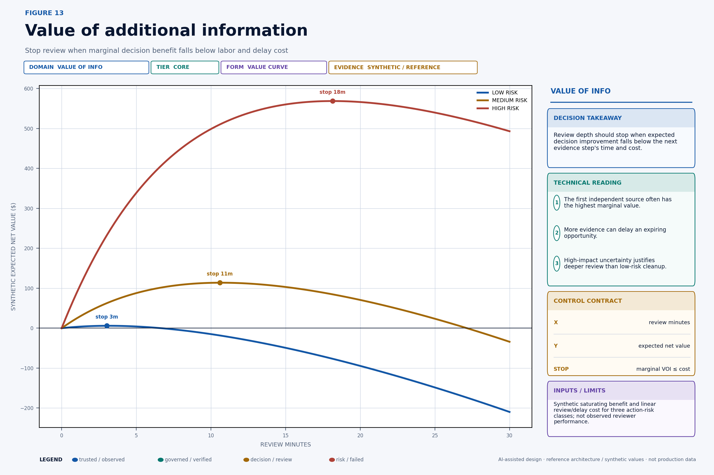
For candidate evidence step e:
VOI(e) = E[min loss before e] − E[min loss after observing e]
NetVOI(e) = VOI(e) − labor(e) − delay(e) − access_risk(e)The expectation integrates possible evidence outcomes and resulting decisions. In practice, exact probabilities are difficult. Teams can use calibrated scenario estimates, sensitivity ranges, or ordered evidence policies. The principle remains useful: do not ask a senior reviewer to open five redundant documents when one independent authoritative record resolves the decision.
High-risk actions justify more evidence because potential avoided loss is larger. Urgent actions justify less delay and may choose containment rather than full adjudication. Low-risk actions should often abstain or use retrospective sampling rather than spend expensive synchronous review.
The packet can show a recommended next evidence step and its reason, but the reviewer retains the ability to abstain or escalate. Track whether suggested evidence changed decisions; otherwise “more context” becomes unmeasured latency.
Fatigue can look like efficiency#
As reviewers process a long streak, median handle time may fall while missed problems rise. The system might celebrate lower latency and higher throughput at exactly the moment judgment quality weakens.
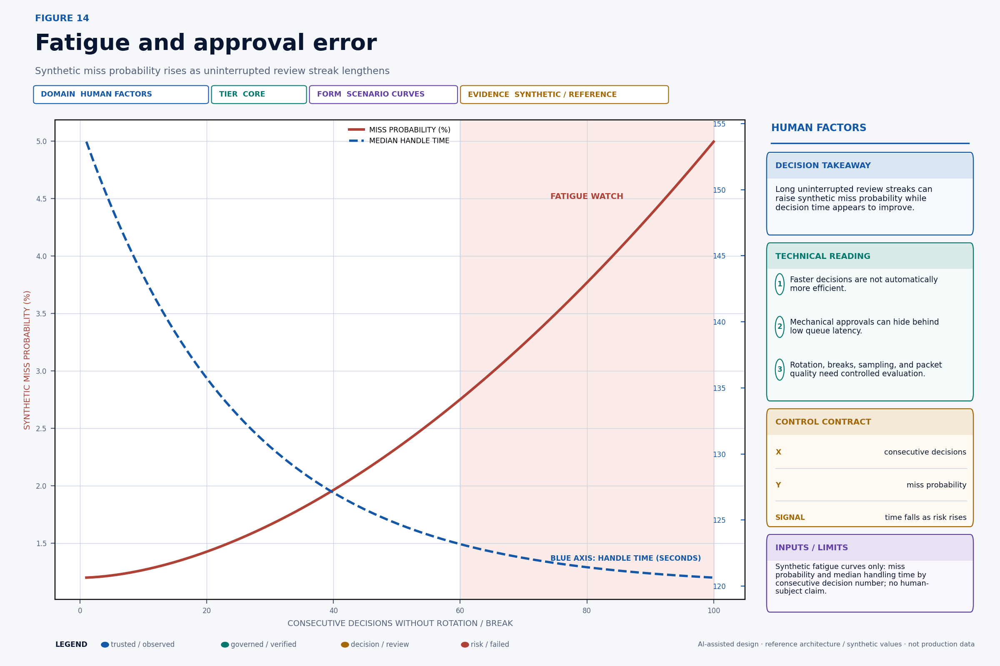
Figure 14 is a scenario, not an empirical claim. A production organization should not impose fatigue thresholds without validated workforce research, ethical review where applicable, labor considerations, and local evidence. Still, the design should make possible failure visible.
Useful signals include consecutive high-risk decisions, time since break or rotation, class switching, packet-open-to-decision distribution, evidence navigation, repeated approval patterns, reviewer-requested deferrals, and outcome disagreement. These signals are sensitive. Govern them for safety improvement, minimize individual surveillance, limit retention, provide transparency, and avoid simplistic productivity scoring.
Controls can include rotation between high- and low-intensity work, maximum uninterrupted high-risk streaks, scheduled recovery time, two-person review for rare actions, peer sampling, more concise packets, and surge staffing. Randomly inserting obvious “attention checks” can degrade trust and distort work; evaluate interventions rather than assuming they help.
Quality metrics belong at system and cohort level first. If many qualified reviewers miss the same issue, fix evidence and interface design before blaming individuals.
Optimize thresholds under capacity and risk constraints#
Routing threshold determines review volume. Lowering it sends more actions to humans, raising labor and delay while reducing some residual loss. Raising it saves capacity but exposes more automated errors.
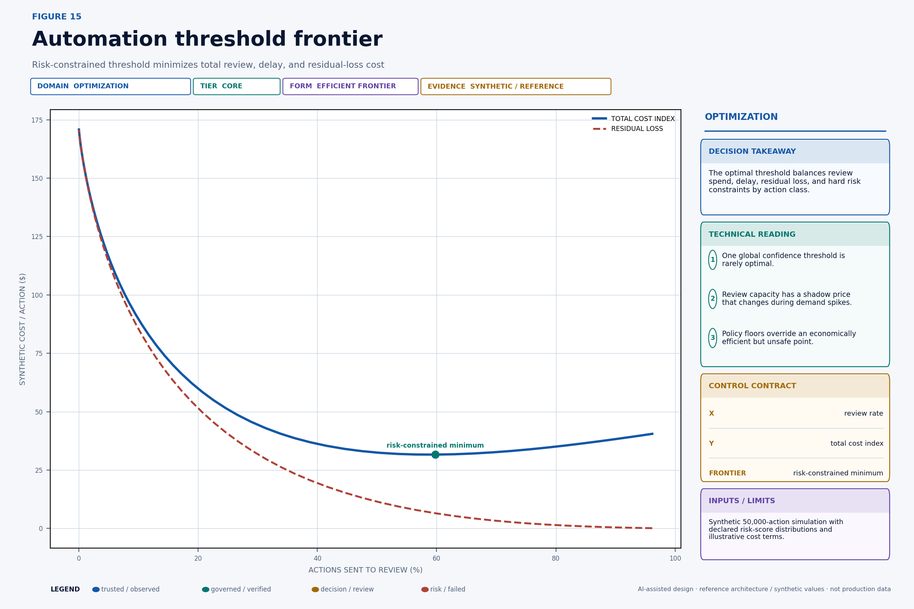
For threshold τ and capacity state q:
minimize_τ C_review(τ, q)
+ C_delay(τ, q)
+ E[L_residual(τ)]
+ C_instability(τ, q)
subject to false_autonomy_high_impact(τ) ≤ ε
P(wait_S2 > 15 min | τ, q) ≤ .05
mandatory_review_rules satisfiedFigure 15 simulates 50,000 actions with synthetic risk scores and cost terms. The point is not its 60% mark. The point is that queue delay makes review cost endogenous: the same threshold can be affordable at 40% utilization and dangerous at 95%. Review capacity has a shadow price.
Thresholds should vary by action class, evidence pattern, reversibility, and reviewer pool. During demand spikes, policy may tighten admission for low-value proposals while preserving mandatory high-risk review. It should not automatically raise the high-risk automation threshold to make the dashboard green.
Evaluate proposed thresholds offline, in shadow routing, and with canary action classes. Compare risk-weighted outcomes and subgroup effects, not only aggregate accuracy.
Shadow review calibrates the boundary#
Before expanding autonomy, run automated decisions and qualified review in parallel without letting the automated branch execute. Later adjudication creates a four-cell operating view.
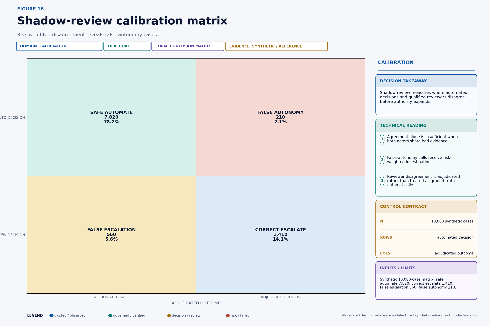
The synthetic matrix has 7,820 safe automation cases, 1,410 correct escalations, 560 false escalations, and 210 false-autonomy cases. Counts alone are insufficient. Weight disagreement by impact and investigate clusters by action, source pattern, model route, reviewer, product, jurisdiction, and novelty.
Reviewers are not automatic ground truth. Two reviewers can share a wrong evidence packet or policy interpretation. Use blinded double review for samples, adjudication rules, appeal outcomes, and authoritative business state where available. Measure inter-reviewer agreement and distinguish genuine ambiguity from poor guidance.
Shadowing also estimates capacity. It reveals service-time distributions, skill bottlenecks, packet defects, deadline pressure, and evidence requests before the queue becomes a production dependency. Protect reviewer time by sampling low-risk actions intelligently rather than duplicating everything forever.
Promotion requires a deployment contract: allowed action slice, maximum exposure, evidence floors, threshold, eligible pools, queue SLOs, false-autonomy budget, appeal path, monitoring, and rollback trigger.
Workforce capacity is a business portfolio#
Staffing should be calculated by reviewer pool and time interval, not one global headcount. Required capacity includes productive handling, variability buffer, breaks, training, calibration, appeals, incident response, and management.
For interval t, pool p, and class s:
demand_minutes[p,t] = Σ_s arrivals[s,t] × mean_service[s,p]
effective_minutes_per_reviewer[t] = scheduled_minutes
× availability_factor
× proficiency_factor
base_reviewers[p,t] = demand_minutes[p,t] / effective_minutes_per_reviewer[t]Then size a variability and service-level buffer using queueing or simulation. Avoid treating availability_factor as an individual productivity target; it is a planning assumption that includes system-level time.
Cross-training creates option value by adding eligibility edges, but certification and quality must be measured. On-call senior pools reduce incident wait but have opportunity cost. Follow-the-sun staffing reduces overnight delay but introduces jurisdiction, handoff, and continuity requirements. Vendor review capacity adds data-access, quality, labor, and accountability considerations.
The business case compares capacity cost with expected avoided loss, opportunity delay, and autonomy enabled. If one specialized queue is the constraint, adding general reviewers may not help. Source automation, clearer packets, policy simplification, and narrower action design can reduce demand more safely.
Operate approval with class-specific objectives#
Average response time and approval rate are weak metrics. A system can meet both while failing the rare actions that justify review.
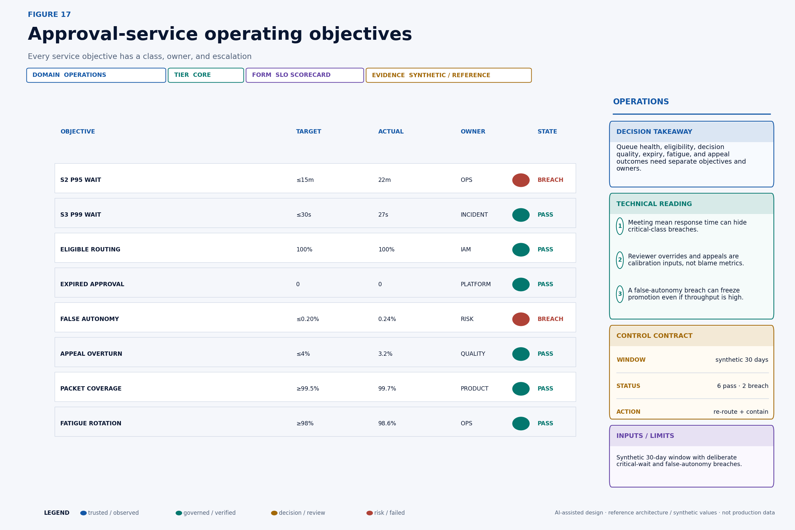
Measure:
• arrival, service, wait, and end-to-end decision time by class and pool;
• deadline breach, expiry, abandonment, reassignment, and no-eligible-reviewer rate;
• packet completeness and evidence-request rate;
• approve, deny, abstain, edit, and appeal outcomes;
• false autonomy, false escalation, harmful approval, and harmful denial after adjudication;
• reviewer disagreement and calibration by action slice;
• stale approval rejected at execution;
• separation-of-duties and value-limit violations;
• ambiguity, recovery, and downstream verification outcomes;
• workload distribution and ethically governed fatigue indicators.
Use percentiles and conditional metrics. P(wait > 15m | S2, pricing, APAC) is actionable; global mean wait is not. Maintain zero-event alerts for ineligible approval and approval after expiry.
Error budgets control promotion. If false autonomy or harmful approval exceeds the budget, narrow the action slice, increase evidence or review, and investigate. If wait breaches occur with sound decisions, add capacity or reduce admissible volume. Do not compensate for a quality breach by rushing reviewers.
Migrate from checkbox review to a decision service#
The first step is measurement, not automation.
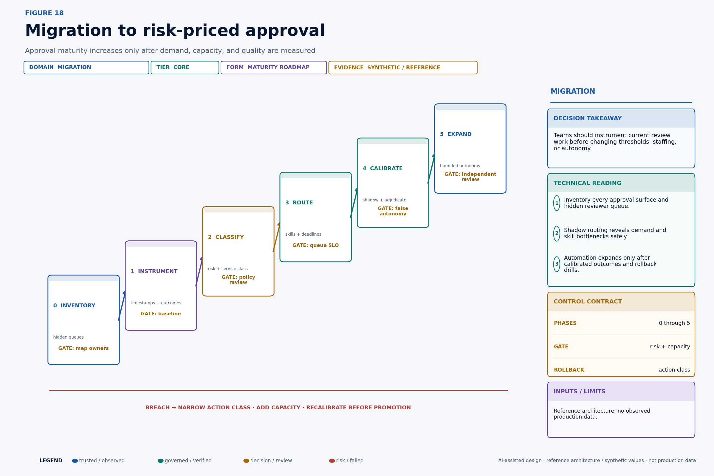
Phase 0 — Inventory approval surfaces#
Find inboxes, chat approvals, ticket states, spreadsheet signoffs, email replies, and implicit “no objection” paths. Map action type, identity, evidence, queue, value limit, expiry, execution binding, and outcome.
Gate: every consequential action has an owner and a documented approval path.
Phase 1 — Instrument timestamps and outcomes#
Create stable task and proposal identities. Record lifecycle timestamps, reviewer eligibility, decision, execution, verification, appeal, and recovery. Baseline arrivals and service distributions without using the data for simplistic employee scoring.
Gate: demand, capacity, and outcome evidence is reliable enough for design.
Phase 2 — Define risk and service classes#
Publish action schemas, risk factors, categorical review floors, S0–S3 classes, deadlines, fallbacks, and separation rules. Replay historical work and review edge cases.
Gate: business, risk, legal, security, and operations approve the policy contract.
Phase 3 — Route by eligibility and deadline#
Implement hard eligibility, skill pools, class reservations, expiry, and admission control. Operate queue SLOs and overload drills. Keep thresholds conservative.
Gate: representative bursts meet critical-class wait and no-eligible-capacity objectives.
Phase 4 — Calibrate in shadow mode#
Compare automated route, qualified review, adjudication, business outcome, and subgroup effects. Evaluate packet design and fatigue interventions. Estimate the value and cost of review by action slice.
Gate: false-autonomy, harmful-approval, and calibration evidence supports a bounded change.
Phase 5 — Expand bounded autonomy#
Move one low-risk, reversible action slice from synchronous review to bounded execution with sampling, leased authority, receipts, verification, and rollback. Preserve mandatory review floors.
Gate: independent review confirms outcomes and rollback drills succeed.
Rollback applies by action class and policy version. A pricing threshold failure should not disable incident containment; an S1 backlog should not consume S3 reserved capacity.
Failure modes and limitations#
Queue models can create false precision. M/M/c assumptions rarely hold. Use them to expose utilization sensitivity, then validate with empirical replay and simulation.
Historical labels encode existing practice. Reviewer decisions can reflect inconsistent policy, unequal information, or bias. Do not train routing directly on approval history without adjudication and subgroup analysis.
Reviewers can become rubber stamps. High approval rates, low handle time, and long streaks may reflect habituation. Improve admission, packet quality, sampling, and workload design; do not merely add warnings.
Priority can starve lower classes. Strict priority protects urgent work but can create indefinite S1 delay. Use bounded priority, aging, capacity reservations, and expiry.
Skill partitions create single points of failure. One privacy expert or pricing principal can become the entire control. Cross-train, document coverage, and create safe fallback—not eligibility bypass.
Delay can change the evidence. Revalidate resource version, evidence, policy, identity, and risk before execution. Approval is not transferable across material change.
Human review can introduce privacy risk. Packets may expose sensitive sources to reviewers. Apply field-level minimization, purpose binding, access logging, and selective disclosure.
Economic models can undervalue rights and trust. Not every harm should be monetized. Categorical constraints, stakeholder input, legal requirements, and organizational values limit optimization.
Fatigue signals can become surveillance. Govern measurement transparently, minimize retention, consult affected workers, and evaluate system design before individual performance.
No review is infallible. Downstream authorization, preconditions, verification, receipts, containment, and recovery remain mandatory for consequential actions.
Robustness tests should include burst arrivals, heavy-tailed service, reviewer outage, eligibility revocation, stale packet, policy change, action edit after approval, deadline race, priority starvation, duplicated task, conflict-of-interest discovery, break-glass use, evidence outage, reviewer disagreement, and failed execution after approval.
Production checklist#
Action and policy#
• Exact typed proposal, business precondition, expiry, postcondition, and recovery.
• Risk factors and categorical floors documented by action class.
• Service class, priority, reviewer requirements, and fallback are machine-readable.
• Same approval cannot authorize a modified proposal.
• Mandatory review rules cannot be overridden by aggregate confidence.
Queue and workforce#
• Arrival and service distributions measured by class and eligible pool.
• Effective capacity includes schedules, skill, training, and variability.
• Critical classes have reservations and overload plans.
• No-eligible-capacity is explicit and fail-closed.
• Deadline and risk backlog—not count alone—drive operations.
Reviewer control#
• Current identity, eligibility, value limit, jurisdiction, and conflict checked at decision time.
• Separation of duties spans person, group, workload, delegation, and service ownership.
• Packet displays exact delta, facts, inference, conflicts, policy, alternatives, expiry, and recovery.
• Approve, deny, edit, abstain, and appeal paths are available and measured.
• Workforce analytics are privacy-conscious and not reduced to click speed.
Execution and learning#
• Decision digest binds proposal and evidence.
• Target precondition and approval expiry are checked before authority issuance.
• Execution receives a bounded permission lease and produces an action receipt.
• Effect is independently verified; failures and ambiguity enter recovery.
• Shadow, adjudication, appeal, and business outcomes calibrate policy.
• Promotion and rollback use action-class error budgets.
Questions that can change the design#
1. Which harms are monetizable, and which require categorical constraints?
2. What is the authoritative action-level error label, and when is it known?
3. Which reviewer skills and limits are hard eligibility versus routing preference?
4. What delay makes each proposal stale or destroys its business value?
5. Which evidence step has the highest marginal value for each action class?
6. How bursty are arrivals, and which policies create correlated demand?
7. Which pools are single points of failure, and how will competence expand safely?
8. How will appeals and reviewer disagreement change calibration?
9. Which workforce measurements are necessary and proportionate?
10. What evidence justifies moving an action from S1 review to S0 bounded autonomy?
The durable principle#
Human oversight is valuable when it introduces qualified judgment at a decision boundary where that judgment changes the result. It is harmful theater when an undifferentiated queue delays urgent work, floods reviewers with low-value tasks, hides evidence, and records a click as proof of safety.
Treat approval as a decision service. Price avoided loss and delay. Model arrivals and capacity. Reserve service for critical classes. Route only to eligible people. Enforce separation of duties. Give reviewers an exact, expiring packet. Bind their choice to execution. Measure calibrated outcomes, not approval volume.
Then “human in the loop” becomes an operating claim the organization can test:
The right person received the right decision, with the right evidence, before expiry, under the right independence constraints—and the review demonstrably reduced residual risk.
Anything less is not oversight. It is a queue with a reassuring label.